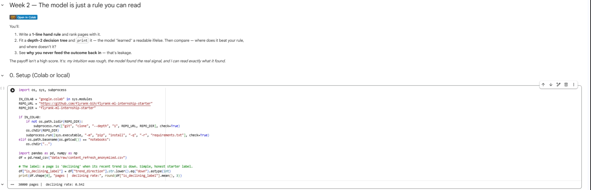
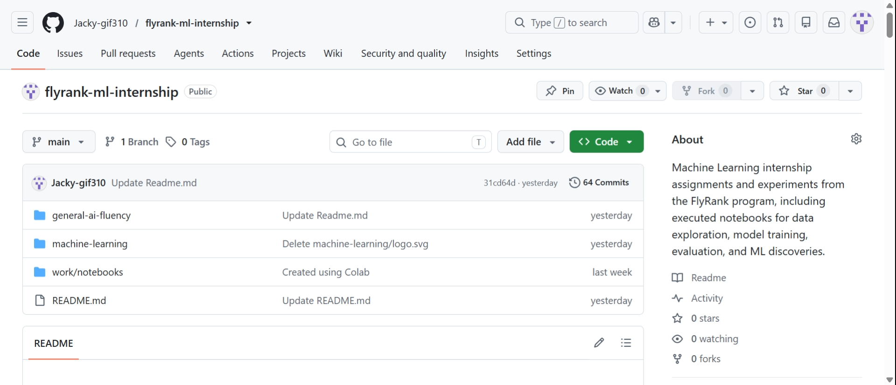
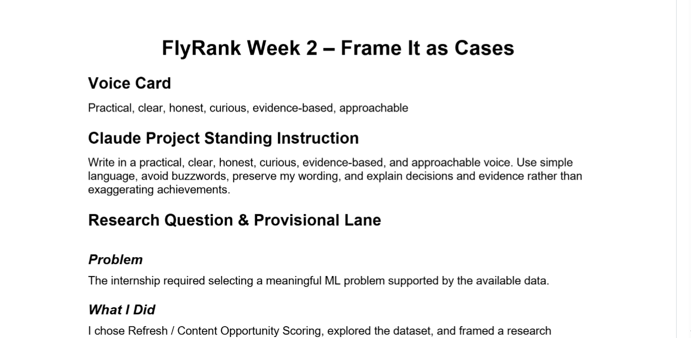

Case Studies
Refresh / Content Opportunity Scoring
Problem: FlyRank's content teams need to know which pages, out of thousands, are worth reviewing for a refresh — but there's no labeled dataset of "this page needed a refresh and it worked." Any prioritization has to be built on observable search-performance signals alone, and stay honest about what it can and can't prove.
What I did: I framed the problem as a proxy classification task — a page counts as an opportunity if its search trend is declining and it's sitting outside the top 10 positions. I documented a data contract up front, naming exactly which signals were safe to use at decision time and which ones would leak the answer. I built a hand-written baseline first (a CTR-gap rule, checked against two real signals — one confirmed, one honestly mixed) before touching a trained model at all.
The catch that mattered: my first pass at model features included two columns that looked like reasonable trend signals. Checking the data dictionary confirmed they were literally the two numbers used to compute the label itself — I dropped them and reran everything. Scores came down from an inflated result to a more honest one. That drop is documented in the notebook, not hidden.
| Model | ROC-AUC | Precision@50 | Precision@20 |
|---|---|---|---|
| Hand-written baseline | 0.536 | 0.040 | 0.000 |
| Logistic Regression | 0.600 | 0.260 | 0.350 |
| Random Forest | 0.573 | 0.320 | 0.350 |
Outcome: the baseline actually performed worse than picking pages at random once evaluated on the real target — a useful, honest finding, not a failure to hide. Both trained models beat it clearly. Random Forest wins on the metric that matters most for a prioritized queue (Precision@50) despite a lower overall ranking score than Logistic Regression — I reported both numbers instead of picking whichever favored one model.
Status: this is a decision-support prioritization tool for a human reviewer, not a causal claim about what fixes traffic, and not yet in production.

The repository

Supporting work
Scoping the problem before touching a model
Before any modeling, I documented the unit of analysis, the safe feature candidates, and the data-quality limitations — missing GSC/GA4 signals, uneven client history, and no confirmed refresh-outcome labels. This is the rigor the capstone result above is built on.

AI Fluency work
Secondary to the ML work above, but part of how I build.
- Prompt Iteration Log — documenting how role assignment, context, and structured output changed AI-generated technical drafts, step by step.
- Automation Workflow — a four-step, no-code pipeline (Gather → Synthesize → Draft → Review) for a weekly AI/SEO industry brief, with an honest time-savings accounting.
- Identity Kit — the type, palette, and mark this whole site is built from.